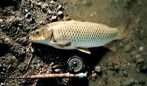
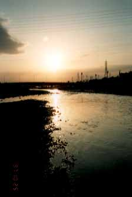

エッセイ
未だ釣り上げていない魚へ
もはやのんびりとキャスティングの練習をしている場合ではなかった。その小さな流れ込みでは、60センチ以上の魚体が我先にライズして水面上の何かを補食しているのである。あの魅力的な丸い唇がいくつも水面に浮かび、ゆっくりと水中に沈んでゆく。時には手のひらほどもある尾びれが団扇のように水面を煽ってゆく。
早鐘の心臓をこらえつつ岸辺に降り、身を低くして流れ込みへにじり寄る。河川敷の川本君は相変わらず三脚の上のビデオカメラに向けて、熱心にダブルフォールを練習している。
ロッドは渓流用の４番、ラインは４番WF-F、リーダーは3X-9ft、そしてティペットはルアー用の６ポンドラインを５ft継ぎ足した。これなら不足はないだろう。
フライは何を結ぼうかと少し悩んだが、とりあえずあのライズならばと、安直に鯉の好きそうな白のエッグフライを結ぶ。いくら奔放にライズを繰り返しているとはいえ、釣り人の多いこの川の鯉はなかなか神経質である。
細心の注意を払って繊細なプレゼンテーションのキャストをもくろむ。リーダーは手前の岸に落とし、ティペットとフライだけを水面に落とすのだ。サイトフィッシングならではの緊張感が満ちてくる。欲を言えば魚はブラウントラウト、周囲の風景はＮＺ南島の原生林であってほしいのだがそれは望むべくもない。肥満気味の大鯉と林立する公団住宅に罪は無い。
あまたのライズの真ん中にふわりとエッグフライが落ちる。ワンキャスト、ワンフィッシュ！と叫びたいが、意外にも鯉の群れは私のフライに見向きもしない。フライの数センチ横に大きな唇が浮かんでは何かを吸い込んでいるが、どうも特定の物体を選んで補食しているのではなさそうである。適当に口を開けて吸い込める物をとりあえず口の中に入れているようだ。
『早く食いつけっ！』
と、心で念じてみるものの、白いエッグフライは寂しそうに水面を漂うばかりである。
『これはいかん...』
ちょっと街の鯉をなめてたかナ、と反省し、それらしい黒っぽくて小さなドライフライやらおなじみエルクヘアカディス、秋田の岩魚には麻薬のような効き目を見せたオリジナルパラシュートなどを繰り出してみるが、一向に反応は無い。
『見えている魚は釣れんもんだ』
という祖父の言葉を思い出す。ティペットが太過ぎるのかもしれないが、他には４ポンドのティペットしか手持ちが無い。あの魚体には４ポンドではいささか不安である。もしかして、ライズしているが実際は水中か川底の餌を探しているのでは、と思い直し、目立つオレンジ色のエッグフライをジンクに浸し、もう一度、ポッチャンとキャストする。エッグフライはただちに沈み、周辺では鯉の背びれや尾びれがゆらめいている。と、水面のティペットがツツーっと動き出す。
「それっ！」
合わせた竿がいきなり絞り込まれ、魚体が下流に突進を始める。周りの鯉の群も一斉に下流の深みへと走り出したので、ちょっとした津波が巻き起こる。
「やったーっ。フライで釣れるとは聞いていたが、とうとう掛けたぞ！」
心はドキドキ、顔はニヤニヤ。この時に至って初めて川本君に声を掛ける。振り向いた彼は満月のようなロッドを見つけ、あわててビデオを抱えて駆け下りてくる....
自分のキャスティングをビデオで見るのは初めてである。いつのまにか左に大きく体を開く癖が付いているのと、バックキャストで思っていた以上にロッドが倒れてしまっている。
「これはいかん、だからバックに飛んだラインに勢いが無い」
「実際に録画するといろいろ勉強になるなぁ」
今度は川本君の折り目正しいキャスティングが映し出され、次第に調子が上がってきれいに飛距離が伸びているがわかる。
「こんだけ投げられれば大したもんだよ」
「うーん、まだフォワードキャストがちょっと下がり気味だな」
土曜日の昼下がり、川本君の自宅の居間で、キャスティング練習会の講評が続く。キャスティングの様子をビデオに収めるのはなかなか難しく、前後のループをすべて画面に収めたり、手首の動きを分析できるように撮すのはもっと工夫が必要であることがわかった。釣りビデオにおけるカメラマンの苦労が偲ばれた。
いよいよ鯉とのファイトシーンが始まる。三十過ぎの男二人が上げる年甲斐もないはしゃぎ声やら、後退が懸念される私の前頭部の生え際やら、物好きにも堤防に車を止めて見に来たサラリーマン氏の笑顔やら、いっさいがっさいを映像と音声で再現した４分間が過ぎてゆく。
「うーん、まんざらでもないね」
「今度は渓流にもビデオ持っていこうか」
などとテレビの前でミカンを食べながらたわいもない会話が続く。
ようやくのことで寄せてきた鯉の口からフライを外すと、40センチの太っちょ鯉は、
「はじめから遊びのつもりだったのね...」
などとつぶやきつつ水底に消えていった。

次の週末には管理釣り場に行くことを約束して、川本君の家から失礼することにした。時刻は午後４時である。あの流れ込みのポイントが気になって、いそいそと車をそちらに向ける。これも川本君には内緒である。
午前中は最初の１尾を釣り上げた後で川本君に２回ヒットしたもののキャッチには至らず、私も２回目のヒットをキャッチすることはできなかったのである。日暮れまであと２時間ぐらいは遊べるだろう。
秋の早い夕暮れを迎えた河川敷には犬を連れたお嬢さんや一心不乱なダイエットウォーキングのおばさんのグループなどで賑わっており、薄汚れたフィッシングベストを着込んで釣竿を持った男には冷ややかな視線が注がれてゆく。
お目当ての流れ込みは、遠くのビルにかかる夕日を背景にして再びいくつものライズで水面が沸き立っている。午前中によくヒットしたフローティングニンフ14番を結び、慎重に手前のライズめがけてキャストする。
水面に浮かぶニンフは全く見えず、残照に浮かぶティペットだけがかろうじて確認できる。
「ん！？」
突然、ティペットもろとも岸辺の砂利の上に着地していたラインまでが水中に引き込まれる。なんとか竿を立ててこらえたものの、あっと言う間にバッキングまで引き出され、朝の１尾とは格段の違いである。いったん柳の木のあたりで左右に身を翻した鯉はついに下流に向かうことを決心し、有無を言わせず流れと共に奔走を始める。
岸沿いを走って鯉の後を追わなければならないのだが水際の柳が邪魔をしており、川に入って迂回しないと無理であることに今になって気づかされる。
「大物を掛けた時に、どこで取り込むかあらかじめ考えておけよ」
今度は父の言葉が聞こえてくる。せっかく長靴を用意して来たのだから履いてくれば良かったと後悔する。今日の水深なら、長靴を履けば余裕で対岸まで渡ることができるのだが。ヤクルトの野村監督ではないが、「備えなければ憂いあり」である。
手を浸すのにも躊躇するこの川の水質であるが、ハラをくくってスニーカーで対岸へ渡り、鯉の後を追うことにする。100ヤード巻いたバッキングも薄くなり、すでにスプールの軸が見えている。このままサヨナラしてしまうのにはもったいない鯉の大きさである。これ以上、コイは失いたくないと思う。
ラインを巻き始め、一歩、また一歩と川へ踏み込む。四歩目でとうとう靴に水が入り、くるぶしもズボンの裾もずぶぬれになる。あとは開き直って小走りに鯉を追う。一つめの瀬の向こうで金色のしぶきが上がる。さっきまではやられ放題だったが今度はこちらが優勢に転じる番だ。
どんどんとラインを巻き取りプレッシャーを与えて浅瀬に誘導する....はずであったが、近づく私の姿を見た鯉は信じがたいパワーで再び突進する。これはもう筋力と持久力のトレーニングである。竿をこらえる左腕の筋肉が張りつめてきた。このロッドを折られたら来シーズンの渓流はオジャンなので、いやがうえにも慎重になる。
結局150メートル以上も引っ張られ、広い淀みまで来てようやく鯉もおとなしくなった。しかし、４番ロッドと６ポンドラインでは無理は出来ない。魚体を水面に浮かせ、空気を吸わせたいところだが幾度となく鯉は水中に戻っていく。これが鯉釣りの醍醐味かな、と引きの強さを十分に堪能する。
ヒットから20分以上が経過した。そろそろ勝負をかけようと、ロッドを限界まで曲げて水辺に寄せる。水中から出た鯉の半身が砂利に乗ったところでフライが外れた。鯉は身を投げ出したまま、ハァハァと荒い息をしている。
『ついにやった！ 55センチはあるぞ！』
あきらめきった表情の鯉を抱き上げて水中に戻してやろうと魚体に手を触れた瞬間、大きく身を踊らせた鯉は私の上半身に川の水を浴びせ、暗闇の中へと消え去った。頬に残る水しぶきに、一瞬、女の手のひらの冷たさが甦る。
竿を納め、独りで河川敷を歩く。暗い川面には住宅団地の街路灯や遠くの橋のオレンジの灯り、ビル街のネオンが浮かび上がり、いつもの渓谷とはまるで違う華やかな夕景である。冷たい風が川面を渡ってゆく。
今日、生まれて初めて鯉を釣った。鮎は子供の頃に釣ったことがある。鱚の味も知っている。むろん山女も岩魚もアマゴも釣ったことがある。しかし.....。
昔、ある女性は言った。
「ヤマメって山の女って字を書くんでしょう。わたし、イワナって岩の女って書くのかと思ってたの」
願わくば、岩のような女性はご遠慮願いたいな、などと考えているうちに車にたどり着くと、あたりはすっかり秋の夜になっている。
一九九七年十月十八日、午後六時五分。三十五歳、独身の一日が暮れてゆく。

エッセイ 目次へ
サイトマップ
ホームへ
お問い合わせ